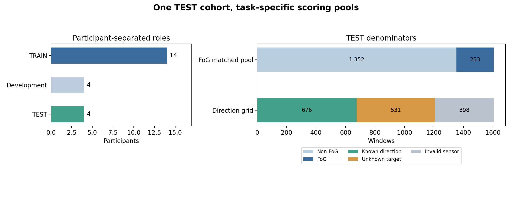
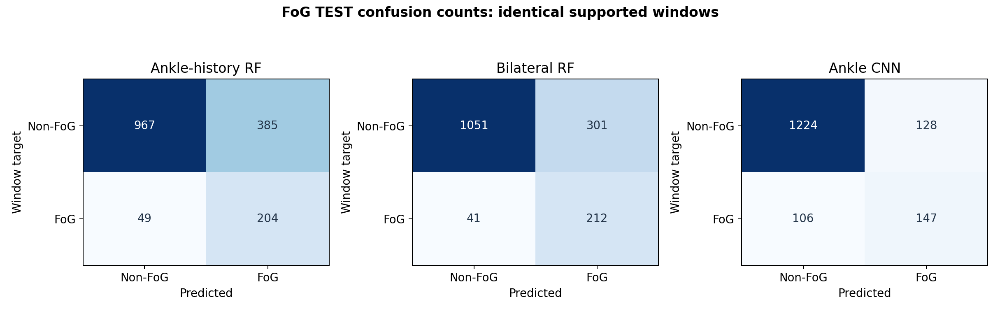
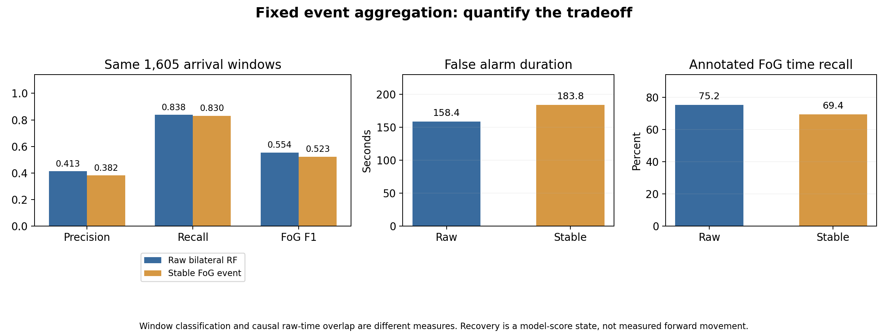

CHARTS · DATA · SHORT EXPLANATIONS
Freezing & direction perception
One collection for explaining the methods, reading the locked-test results, and preparing presentation figures.
Existing models and thresholds were fixed before TEST scoring. Raw model results and fused outputs are reported separately.
IMPLEMENTATION
From IMU windows to one perception timeline
Three FoG methods are compared. The preselected bilateral RF and the current-direction RF feed the fusion adapter; results from all three FoG methods are not combined into an ensemble.


Methods at a glance
| Method | Input | Representation | Model | Decision rule |
|---|---|---|---|---|
| Ankle-history RF | Left ankle: acceleration + gyro | 140 current/history features | 300-tree RF | FoG threshold 0.18 |
| Bilateral RF | Both ankles: gyro | 66 window features | 300-tree RF; fusion reference | FoG threshold 0.23 |
| Ankle CNN | Left ankle: gyro | 120 x 3 centered waveform | 4 convolution layers; 8,353 parameters | FoG threshold 0.50 |
| Current-direction RF | Left ankle + back: acceleration + gyro | 12 gravity/rotation features | 300-tree RF | Learned unknown class; fusion confidence gate 0.60 |
RF = random forest. Scores use complete 120-sample windows at 60 Hz, updated every 30 samples. Current direction means the observed action, not future turning intention.
EVALUATION SCOPE
Same held-out people, explicit scoring pools



FoG scores use all matched supported windows. Primary direction scores use valid windows with a known direction target. Invalid sensors and unknown targets are counted separately.
FROZEN MODELS · TEST
FoG detection: recall versus false alarms


| FoG method | Accuracy | Precision | Recall | FoG F1 |
|---|---|---|---|---|
| Ankle-history RF | 72.96% | 0.346 | 0.806 | 0.485 |
| Bilateral RF | 78.69% | 0.413 | 0.838 | 0.554 |
| Ankle CNN | 85.42% | 0.535 | 0.581 | 0.557 |
Always predicting non-FoG gives 84.24% accuracy and zero FoG recall/F1. Read precision, recall and F1 together. The bilateral RF remains the fusion reference selected before TEST.
Show FoG confusion counts



CURRENT DIRECTION · TEST
Recognition and rejection need separate numbers


| Stage | Accuracy | Macro-F1 | Accepted coverage | Accepted-only accuracy |
|---|---|---|---|---|
| Raw current-direction RF | 81.07% | 0.844 | 86.69% | 93.52% |
| Fixed fusion | 51.78% | 0.592 | 54.73% | 94.59% |
Both rows use 676 known-target windows. Always-straight accuracy is 56.66%. Accepted-only accuracy excludes rejected windows, so it cannot replace overall accuracy. Fusion does not improve overall accuracy.
FIXED TEMPORAL RULES · TEST
What changes after FoG event confirmation?



| Stage | Precision | Recall | FoG F1 | False alarm time | FoG time recall |
|---|---|---|---|---|---|
| raw bilateral rf | 0.413 | 0.838 | 0.554 | 158.4 s | 75.20% |
| stable fog event | 0.382 | 0.830 | 0.523 | 183.8 s | 69.37% |
Two distinct positive observations confirm FoG. Three negative observations support recovery, with a 0.10 score margin. Hysteresis can retain false positives; this is not a measured step-recovery result. The fixed adapter does not improve FoG F1 on this test.
REAL-IMU PROCESS EXAMPLE · TEST
FoG, direction and state on the same clock


The first TEST record and its first 30 seconds were specified before scoring. This example retains false alarms and unknown direction. Targets describe completed windows; a result becomes usable only at its availability time.
FIGURE LIBRARY
Take the figures and their data
PNG files are ready to insert into slides. SVG files remain editable. CSV files contain aggregate data; no raw IMU or per-window patient CSV is included.
| Figure | Scope | Downloads |
|---|---|---|
| Workflow and model roles | Implementation | PNG · SVG · CSV |
| Participants and scoring pools | TEST scope | PNG · SVG · CSV |
| Three FoG methods | TEST | PNG · SVG · CSV |
| Current direction and fusion | TEST | PNG · SVG · CSV |
| FoG before and after event confirmation | TEST | PNG · SVG · CSV |
| Synchronized TEST replay | TEST example | PNG · SVG · CSV |
| FoG confusion matrices | TEST | PNG · SVG · CSV |
Development validation: method-selection context
These values belong to development validation. TEST is the main result above. Different people and class balance mean the differences are not an optimization gain.
| Task / model | Metric | Development n | Development | TEST n | TEST |
|---|---|---|---|---|---|
| Ankle-history RF | FoG F1 | 2014 | 0.691 | 1605 | 0.485 |
| Bilateral RF | FoG F1 | 2014 | 0.686 | 1605 | 0.554 |
| Ankle CNN | FoG F1 | 2014 | 0.677 | 1605 | 0.557 |
| Raw current-direction RF | Accuracy | 1130 | 0.670 | 676 | 0.811 |
Frozen outputs are reorganized for display; no model was retrained, threshold changed, or test case selected by prediction quality. Four held-out participants provide a course-project generalization check; clinical efficacy and live computation latency are not evaluated.
Source and file hashes · Figure guide · Machine-readable summary